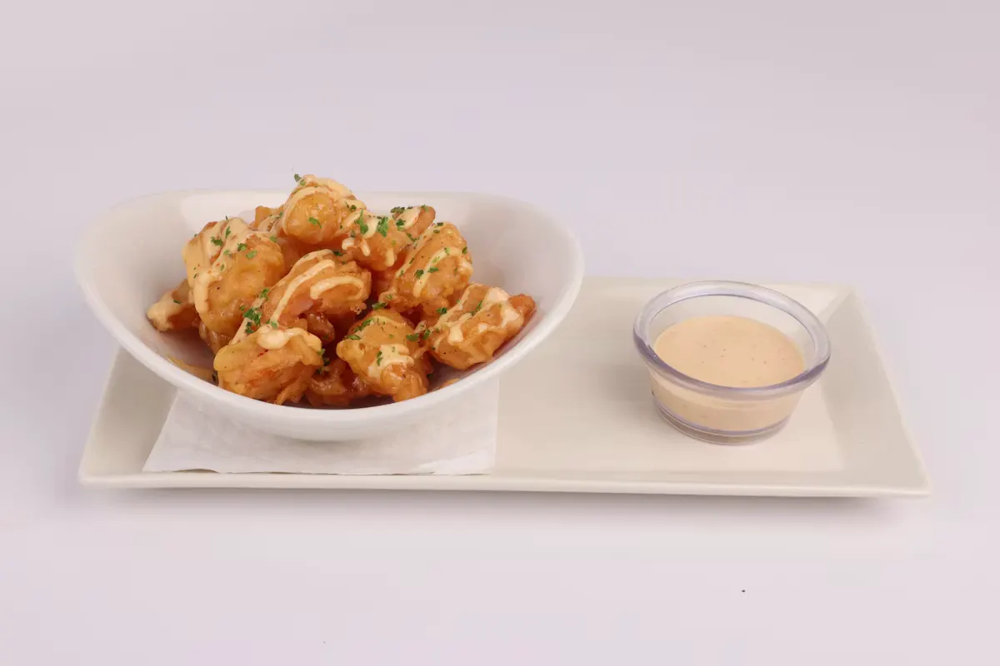
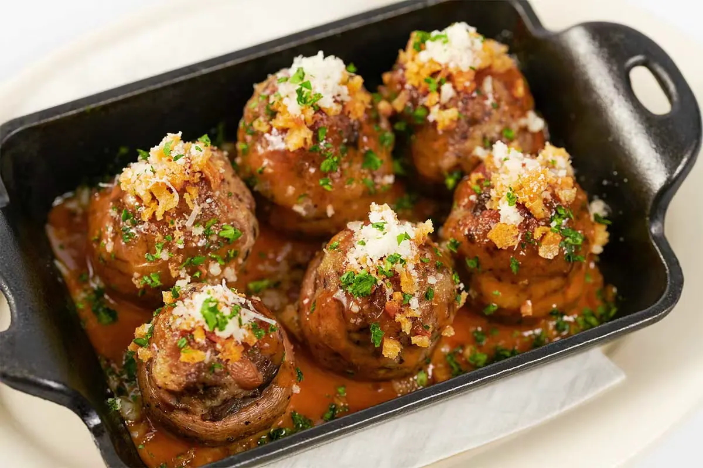
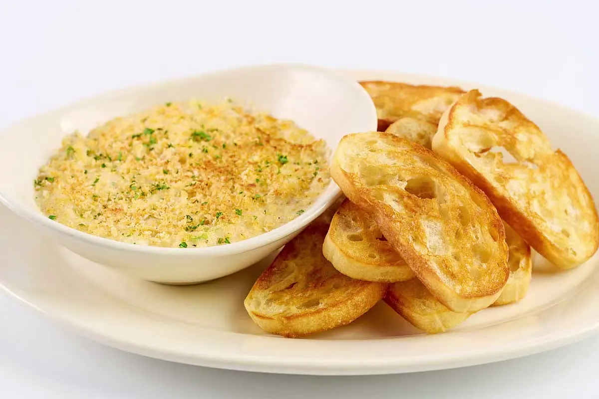
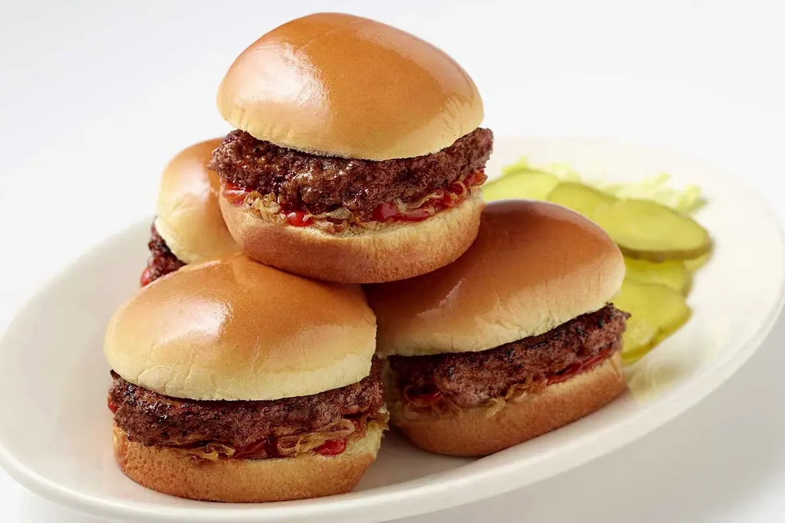
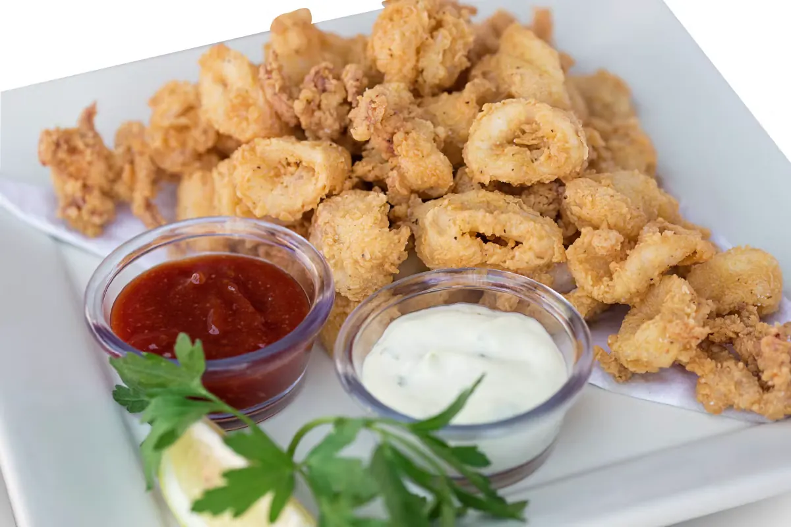
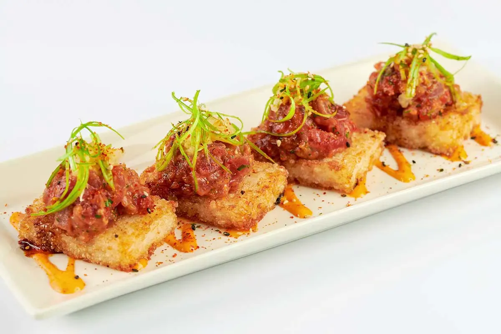
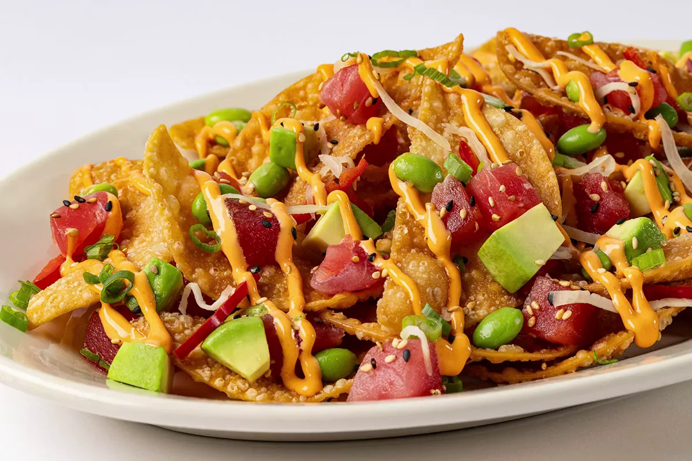
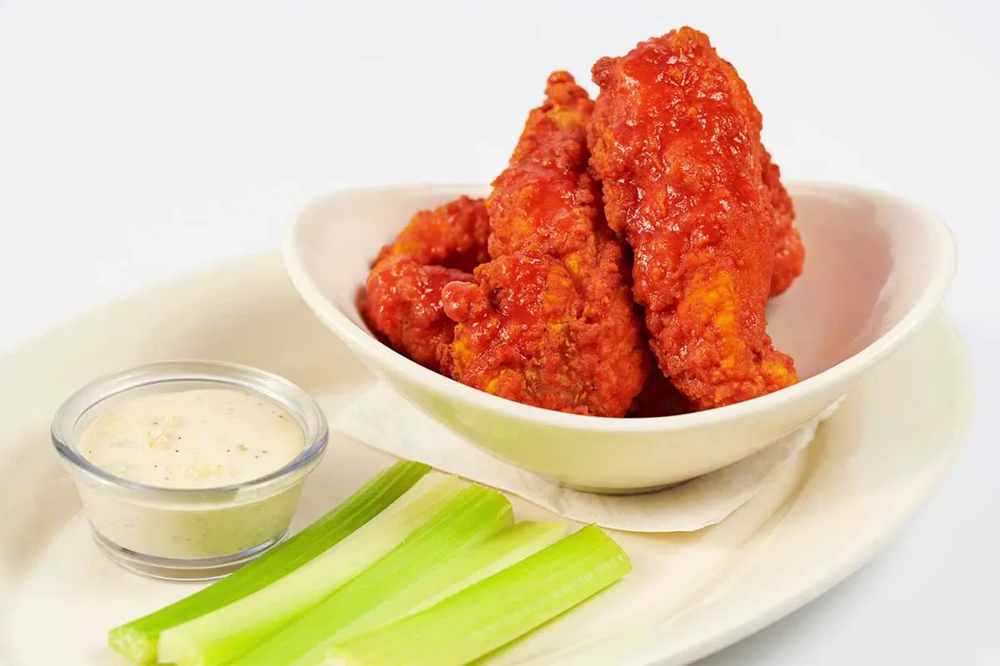

Cheesecake Factory Appetizer Menu: Prices, Calories & Full Item List (August 2026)
Every item on The Cheesecake Factory's appetizer menu, in one place: prices, calories, ingredients, and portion details for August 2026, plus Social Hour discount times, gluten-free and vegetarian picks, and FAQ answers.
Prices and calories can shift slightly by location. Most items here are sized to share, not single-serving portions.
This is one category within the full Cheesecake Factory menu. Many of these same appetizers are discounted during Happy Hour, Monday through Friday from 4–6 PM.
Quick answer
- Price range
- $7.95 – $13.95
- Portion size
- Most serve 2–4 people
- Lowest calorie
- Chicken Pot Stickers (380 cal)
- Highest calorie
- Factory Nachos with Spicy Chicken (2,950 cal)
- Most popular
- Avocado Eggrolls, then Fried Macaroni and Cheese, then Buffalo Blasts
Appetizers menu
The core lineup leans into fried, shareable comfort food: eggrolls, sliders, dips, and a few Asian-influenced small plates. Most dishes are built for the table rather than one person, which is why portions and calorie counts run high across the board.

Avocado Eggrolls
Crispy wonton wrappers stuffed with avocado, sun-dried tomato, red onion, and cilantro, fried until the shell shatters and served with a tamarind-cashew dip. It's the single most-ordered starter on the menu, and the filling stays cool and creamy against the hot wrapper.
Main ingredients: Avocado, wonton wrapper, sun-dried tomato, red onion, cilantro, tamarind-cashew sauce
Customization: Extra sauce on the side, or order without sun-dried tomato for a milder flavor

Tex Mex Eggrolls
A spicier cousin to the avocado version, filled with chicken, corn, black beans, jalapeño jack cheese, and red peppers, served with avocado cream and salsa. It reads more like a fried burrito filling than a traditional Tex-Mex plate.
Main ingredients: Chicken, corn, black beans, jalapeño jack cheese, red peppers, avocado cream, salsa
Customization: Can be made without chicken for a vegetarian version at most locations

Buffalo Blasts
Shredded chicken, mozzarella, and buffalo sauce packed into a thick, spiced wonton wrapper and deep-fried until golden. The heat sits closer to medium than face-melting, which makes it an easy order for a mixed group.
Main ingredients: Chicken breast, mozzarella, buffalo sauce, spiced wonton wrapper, celery, blue cheese dressing
Customization: Ranch swap available on request

Chicken Pot Stickers
Pan-seared dumplings filled with chicken and vegetables, finished with a soy-ginger dip. Compared to everything else on this menu, it's the lighter choice by a wide margin, and a good pick if you still want an entrée afterward.
Main ingredients: Chicken, cabbage, scallion, dumpling wrapper, soy-ginger sauce
Customization: Can be ordered steamed instead of pan-seared at some locations

Fried Macaroni and Cheese
Macaroni bound in cheese sauce, formed into balls, breaded, and deep-fried, then served over marinara. It's rich enough that two people sharing an order will likely still have leftovers.
Main ingredients: Macaroni, cheese blend, breadcrumb coating, marinara sauce
Customization: Marinara can be swapped for extra cheese sauce

Fried Calamari
Lightly breaded calamari served with spicy marinara and a lemon-caper aioli, fried to a crunch that holds up better than most fried seafood at a chain. The portion is large enough to work as a solo entrée.
Main ingredients: Calamari, seasoned breading, spicy marinara, lemon-caper aioli
Customization: Marinara served on the side, on request

Factory Nachos
A full platter of tortilla chips loaded with chili, cheese, jalapeños, pico de gallo, guacamole, and sour cream. This is the highest-calorie item on the appetizer menu, built to split among three or four people rather than eaten solo.
Main ingredients: Tortilla chips, chili, cheese blend, jalapeños, pico de gallo, guacamole, sour cream
Customization: Add Spicy Chicken for an upcharge, or keep it vegetarian

Hot Spinach and Cheese Dip
A warm dip of spinach, artichoke, and a blend of cheeses, served with tortilla chips and salsa. It's one of the heaviest items on this list by weight of cheese alone, and the portion suits a table of four.
Main ingredients: Spinach, artichoke, cheese blend, tortilla chips, salsa
Customization: Bread swap for chips available at some locations

Quesadilla
A grilled tortilla stuffed with melted cheese, served with salsa, sour cream, guacamole, and pico de gallo on the side. Adding chicken pushes the calorie count up by roughly 200, which some guests use to treat this as a light meal rather than a starter.
Main ingredients: Flour tortilla, cheese blend, salsa, sour cream, guacamole, pico de gallo
Customization: Chicken add-on (upcharge), or plain cheese only

Roadside Sliders
Three mini burgers on brioche-style buns with all the standard fixings, plus fries on the side. It's the most straightforward, familiar option on the appetizer menu.
Main ingredients: Beef patties, brioche buns, lettuce, tomato, onion, cheese, fries
Customization: No cheese, or swap fries for a side salad at most locations

Sweet Corn Tamale Cakes
Griddled cakes made from sweet corn and masa, layered with black beans, cheese, salsa, and a cilantro-lime crema. It's vegetarian by default and one of the more distinct flavors on a menu dominated by fried wontons.
Main ingredients: Sweet corn, masa, black beans, cheese, salsa, cilantro-lime crema
Customization: Ask about the cheese used if avoiding rennet

Thai Lettuce Wraps
Chicken, shiitake mushrooms, and green onion stir-fried with a Thai peanut sauce, served with crisp lettuce cups for wrapping at the table. It's one of the few interactive, build-it-yourself items on this menu.
Main ingredients: Chicken, shiitake mushrooms, green onion, peanut sauce, lettuce cups
Customization: Peanut sauce on the side (dish itself is not allergy-safe overall)

Warm Crab Dip
A delicious blend of crab, artichokes and creamy cheese served warm with fresh baked crostini.

Eggroll Sampler
A variety of all of our rolls with Avocado, Tex Mex, Cheeseburger Spring Rolls and Chicken Taquitos.

Spicy Tuna*
Ahi tuna on crispy sushi rice with ginger and green onion.

Ahi Poke Nachos*
A poke-style take on nachos, topped with ahi tuna.

Ahi Tuna & Shrimp Ceviche*
Ahi tuna and shrimp ceviche, served chilled.

Pretzel Bites With Cheddar Cheese Fondue
Warm pretzel bites served with a creamy cheddar cheese fondue for dipping.

Buffalo Wings
Fried wings covered in hot sauce and served with blue cheese dressing and celery sticks.

Buffalo Chicken Strips
Crispy chicken strips tossed in Buffalo sauce, served with blue cheese dressing and celery sticks.

Soup of the Day
Rotating chef's selection — ask your server what's available today.
Social Hour: the cheapest way to order appetizers
Most locations run a discounted Social Hour at the bar, and it's the easiest way to try several appetizers without paying full menu price.
- When
- Monday–Friday, 4:00–6:00 PM
- Where
- Bar and high-top seating only, not standard dining tables
- Deal
- Rotating appetizers drop to around $9.95, including the Avocado Eggrolls and Buffalo Blasts
- Note
- Availability can vary by location and around holiday weeks, so confirm with the host before sitting down expecting the discount
Dietary & allergen notes
If you're ordering around a dietary restriction, only a few of these appetizers work without modification, and the fried, wheat-based items rule out gluten-free diners entirely.
- Vegetarian: Sweet Corn Tamale Cakes
- Not gluten-free: All fried, wonton-based, and breaded items (Chicken Pot Stickers, Fried Macaroni and Cheese, Fried Calamari, all eggrolls and sliders), since the wrappers and breading are wheat-based
- Gluten-free starters: Available on a separate gluten-free menu with different items
- Allergies: Flag severe allergies with your server directly, since shared fryers and prep surfaces are common in this kitchen
Ordering tips
A few small decisions make a real difference in how well this menu works for your table, especially if you're dining alone or ordering for delivery.
- Most appetizers serve 2–4 people, so solo diners should split one or pair a smaller item (like Chicken Pot Stickers) with an entrée
- Fried items are best eaten within a few minutes of arriving at the table, since the breading softens as it sits
- For pickup or delivery, sliders and lettuce wraps travel better than dips or fried items
FAQ
The Avocado Eggrolls, followed by the Fried Macaroni and Cheese and the Buffalo Blasts.
Most run $7.95–$13.95, with the majority around $9.95–$10.95. Prices vary by location.
Monday–Friday, 4:00–6:00 PM, at the bar and high-top seating only.
Yes. Nearly every appetizer here is portioned for 2–4 people.
Sweet Corn Tamale Cakes.
Not on this specific menu. Fried and wonton-based items all contain wheat. A separate gluten-free menu offers different starters.
About 930 calories for a full order.
Not standard on this menu, but worth asking your server since kitchen flexibility varies by location.
Yes, pricing is set regionally, so the same dish can cost more in a higher cost-of-living city.
Yes, through the restaurant's online ordering system and third-party delivery apps. Fried items are best enjoyed fresh in-restaurant.
Yes. The SkinnyLicious® Small Plates & Appetizers menu offers separate, lower-calorie starters like Chicken Taquitos and Grilled Asparagus.
Fried items with cheese or heavy sauces (Factory Nachos, Hot Spinach and Cheese Dip) run several times higher than steamed or grilled options (Chicken Pot Stickers), since portion size and cooking method drive most of the difference.
Final thoughts
The appetizer menu is built around sharing, which explains both the large portions and the wide calorie range across the lineup. New guests do well starting with the Avocado Eggrolls or Fried Macaroni and Cheese. Social Hour is the best way to sample more of the menu without the full price tag, and the SkinnyLicious lineup is the go-to for a lighter option.
For calorie details on every dish, see our nutrition guide, or check the allergen guide and gluten-free menu if you're managing a dietary restriction.